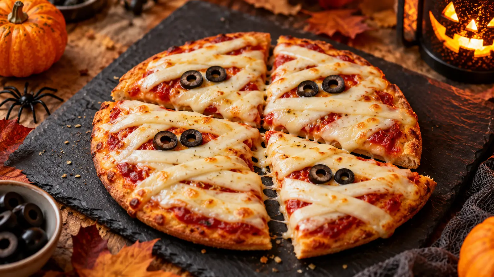

RECIPE COLLECTION
🎃 Scary Halloween Recipes
Playful Halloween party food with spooky shapes, bold colours, and practical step-by-step methods for sharing.
30 recipes
No matching recipes yet. Try another recipe name, ingredient, cuisine, or tag.

Dinner
Monster Face Pie
A golden vegetable-and-beef pie decorated with an expressive, kid-friendly monster face for a Halloween dinner table.

Appetizer
Finger-Shaped Cheese Sticks
Crisp cheese pastry sticks with almond nails and a herby finish, made for a playful Halloween snack board.

Beef
Zombie Meatloaf
A tender glazed meatloaf with olive eyes and pepper hair, designed as a cheerful Halloween centrepiece rather than a scary dish.

Appetizer
Monster Hand Ham and Cheese Board
An easy Halloween grazing board that turns ham, cheese, crackers and fresh produce into a friendly monster-hand display.

Appetizer
Sausage Monster Charcuterie Board
A playful Halloween charcuterie board with a sausage-and-cheese monster face, crisp crackers and fresh produce for contrast.

Appetizer
Wrapped Halloween Cheese Ball
A creamy herb cheese ball wrapped in cucumber ribbons for a fresh, playful Halloween party centrepiece.

Dessert
Edible Red Party Sauce
A bright berry dipping sauce with a glossy finish for fruit, cookies and Halloween dessert boards.

Appetizer
Creepy Deviled Egg Eyeballs
Classic deviled eggs dressed with olive pupils and fine pepper details for an easy Halloween platter.

Appetizer
Pizza Skulls
Cheesy pizza pockets baked in skull molds for a crisp, shareable Halloween snack.

Appetizer
Spooky Baked Brie
Warm baked brie topped with a pastry spiderweb and olive spider for a simple Halloween starter.

Dinner
Ratloaf Meatloaf
A savory mouse-shaped meatloaf with herb potatoes and roasted vegetables for a playful Halloween supper.

Dessert
Chocolate Mice
Small chocolate truffle mice with almond ears and licorice tails for a gentle Halloween dessert tray.

Appetizer
Black Bat Chicken Wings
Crisp oven wings glazed with a dark balsamic barbecue sauce and served with a bat-themed garnish.

Dinner
Mini Monster Meatloaf Bites
Individual glazed meatloaf bites with vegetable faces, sized for a Halloween buffet or family dinner.

Appetizer
Monster Cheese Ball
A bright herb-and-cheddar cheese ball decorated with vegetable eyes for a cheerful Halloween snack table.

Dinner
Jack-O-Lantern Stuffed Peppers
Orange bell peppers carved with friendly faces and filled with seasoned rice, beans and cheese.

Appetizer
Witch Hat Dippers
Crisp tortilla cones with seasoned cream-cheese filling, shaped as savory witch hats for dipping.

Dinner
Jack-O-Lantern Beef Hand Pies
Flaky individual beef pies with carved pumpkin-style pastry tops for a portable Halloween meal.

Dinner
Spooky Calzone Snake
A long mozzarella-and-pepperoni calzone coiled into a friendly snake for a Halloween pizza night.

Appetizer
Octodogs
Hot dog octopuses with crisp curled legs, served with a simple mustard and ketchup dip.

Appetizer
Hot Dog Mummies
Tender hot dogs wrapped in golden pastry strips with tiny mustard eyes for a quick Halloween tray.

Dinner
Mummy Pizza
A crisp personal pizza covered with mozzarella bandages and olive eyes for an easy Halloween meal.

Appetizer
Spider Hot Dogs
Mini hot dog spiders with pretzel-stick legs, made for a quick kid-friendly Halloween platter.

Dinner
Mini Meatloaf Ghosts
Tender individual meatloaves topped with piped potato ghosts for a warm Halloween dinner.

Appetizer
Baked Mummy Jalapeño Poppers
Cream-cheese jalapeño poppers wrapped in light pastry strips and baked until crisp.

Appetizer
Shrimp Cocktail Brain Dip
A chilled shrimp cocktail dip piped into a playful brain-like swirl for a Halloween seafood starter.

Appetizer
Mummified Meatballs in Potato Skin Coffins
Crisp potato-skin coffins holding saucy meatballs with cheese-strip mummy wraps.

Appetizer
Crescent Mummy Hot Dogs
Bite-size crescent-wrapped hot dogs with a crisp flaky finish for Halloween party snacking.

Dinner
Pumpkin Sloppy Joes
Savory ground-beef sandwiches enriched with pumpkin purée, tomato and warm spices for autumn.

Appetizer
Spider Deviled Eggs
Creamy deviled eggs topped with olive spiders for a classic, protein-rich Halloween appetizer.